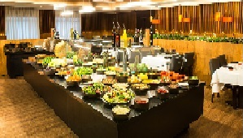

Quer um churrasco?
Macios,suculentos,quase derretendo ao corte da faca.
Retirados
direto do fogo com aquele cheiro
irresistivele uma textura de dar agua na boca.
Os melhores
cortes de carne do mundo estão aqui.

Variedades de Carnes e Acompanhamentos e Bebidas
AQUI É MAIS GOSTOSO!
Somos de uma família tradicional no rodízio de churrasco em Brasília. Há 35 anos, começamos a nossa história sem muito glamour, mas com muita dedicação. Com o passar do tempo, sentimos a necessidade de promover mudanças. E como nunca medimos esforços para assegurar a satisfação de nossos clientes, em 2011, investimos ainda mais na excelência no atendimento e na qualidade dos nossos produtos e, ainda, agregamos a eles um ambiente muito mais sofisticado, culminando na reformulação da marca. O antigo nome cedeu espaço para a Churrascaria Pampas.
Faça sua reserva